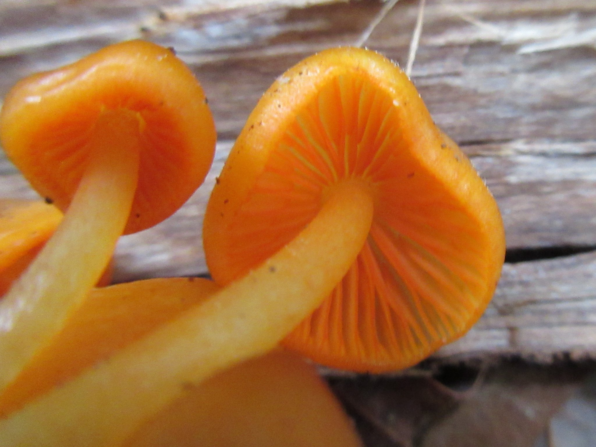
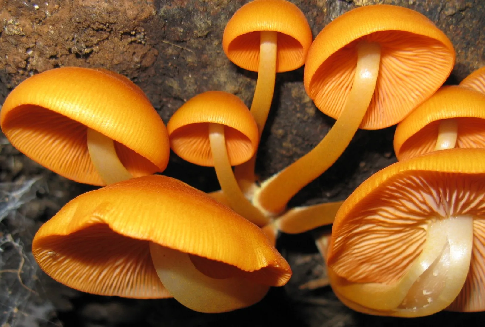

Lets Explore Orange Mushrooms
Mycena leaiana, commonly known as the orange mycena or Lea's mycena, is a species of saprobic fungi in the genus Mycena, family Mycenaceae. They have bright orange caps and stalks and reddish-orange gill edges. Orange mycena mushrooms are widespread across eastern North America. They're not edible—there isn't much to them to make them even worth foraging—but they're not poisonous either. The color is a bright orange that fades as the mushroom matures. The surface of the cap is sticky, especially in moist weather, and smooth, while the margin often has striations.
Handling the mushroom can sometimes leave an orange stain on the skin due to the pigment in the gills. Despite its striking appearance, its taste is described as mild, mealy, and unappealing
 Grows on decaying hardwood (especially logs and stumps)
The sudden appearance of mushrooms after a summer rain is one of the more impressive spectacles of the plant world.--John Tyler Bonner